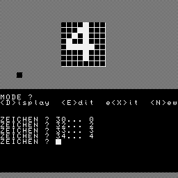

0100 032f 0100 C ...
ZEICHENEDITOR/32
Der Zeichenkode wird direkt eingegeben. Es braucht also eine Tastatur, die alle Kodes generieren kann. Selbst dann bleibt die Frage, wie kann man das Zeichen mit dem ASCII-Kode 0x00 editieren.